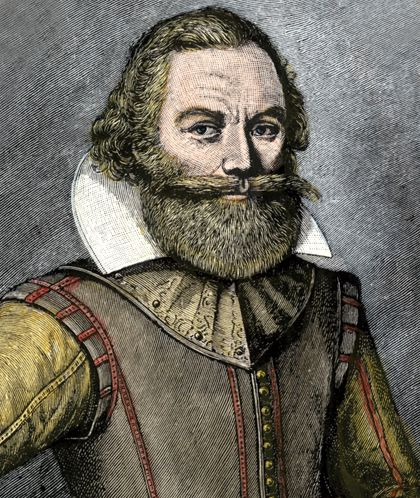

Introduction & Why I Chose This Topic
I chose John Smith because I felt his works towards developing Colonial America, specifically the colony of Jamestown, are essential to know for the average student in middle school to high school. I also feel that throughout his life, his struggles, defeats in life, and overall failures he encountered could be a lesson as to how he reaped the benefits.

Captain John Smith
Background & Early Life
- Born in 1580 in Willoughby, England to George and Alice Smith. His father was a yeoman farmer.
- As a young boy, John attended local grammar schools learning reading, writing, arithmetic, and Latin.
- After his father passed away in 1596, Smith set sail for France to fight against the Spanish, and later joined the Holy Roman Empire's army against the Ottoman Turks, earning the title of "English gentleman".
- After being wounded, captured, and sold into Turkish slavery, he killed his master during a beating, escaped on horseback, and returned to England in 1604.
Smith in Colonial America & Jamestown
Smith’s military expertise deeply impressed Captain Bartholomew Gosnold, and they set sail with three ships and 104 settlers to begin a settlement. The colony was named Jamestown in honor of King James I and was established on May 13, 1607.
- The Beginning Struggles: Early months faced food shortages, unhealthy drinking water, disease, skirmishes with the Powhatan Indians, and council conflicts. Only 38 settlers were alive when Smith was released by the Powhatan.
- Leadership & The "Work or Starve" Rule: On September 10, 1608, Smith became president of the council. His rule was strict: anyone who didn't work didn't eat. He repaired the fort, planted crops, dug a well, and dropped the death toll.
- Relations with the Powhatan: Smith explored 2,500 miles of the Chesapeake Bay. Relations with the Powhatan were tense; Pocahontas famously warned Smith of plots against him, though open warfare eventually followed.

Smith's 1612 Map of Virginia and Chesapeake Bay
:max_bytes(150000):strip_icc()/Pocahontas-saves-Smith-NE-Chromo-1870-592f52f35f9b58595037766b.jpeg)
Depiction of Pocahontas Intervening for John Smith
Long-Term Impact on American History
Smith's 'work' or 'starve' rule made everyone contribute, helping the colony survive. Some historians even credit him with the survival of Jamestown. Long-term impacts include Jamestown becoming the first permanent English settlement in North America and the first of the 13 colonies. Additionally, his writings and maps were used for decades (even by the Pilgrims in 1620), and he officially named New England.
Key Unit Vocabulary
- Charter: The Virginia Company's legal permission from King James I to establish the colony.
- Council: The colony's seven-member governing body, which Smith joined and later led.
- Apprentice: Smith worked as one for a merchant as a boy.
Sources & Bibliography
- Jamestown Rediscovery Foundation. "John Smith | Historic Jamestowne." Historicjamestowne.org, 2019.
- "John Smith | Jamestown-Yorktown Foundation, VA." Www.jyfmuseums.org.
- National Park Service. "Captain John Smith - Historic Jamestowne." Nps.gov, 4 Sept. 2022.